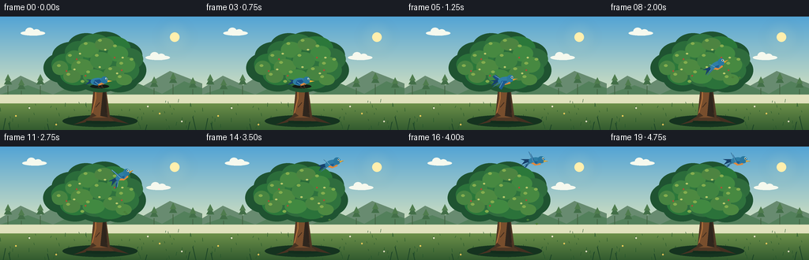
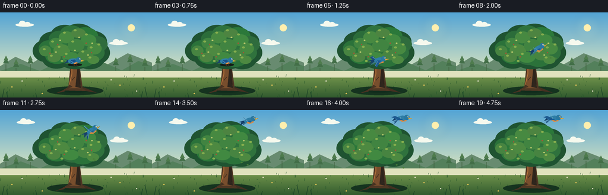
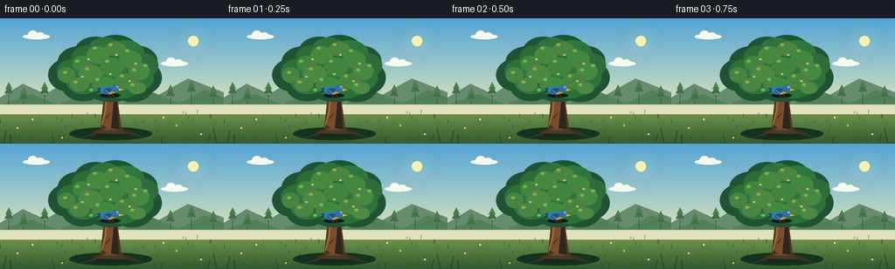

CODING AGENTS AS PIXEL WORLD MODELS
traex/GPT-5.6-Sol · dynamic_spatial_relationship_0050
点击播放 · 原生 RGB 像素
逐轮保存的候选
回放视频、检查图与代码变化。
每份候选均可单独播放。实际图片检查记录在下方工具轨迹中。
候选 01播放与检查图
点击播放 · 原生 RGB 像素

展开代码变化
--- 上一保存版本
+++ 本次保存版本
@@ -0,0 +1,288 @@
+from pathlib import Path
+import math
+import numpy as np
+from PIL import Image, ImageDraw, ImageFilter
+import artifact_io
+
+# Procedural, hand-illustrated animation. Rendering above output resolution gives
+# clean antialiased silhouettes while keeping every frame reproducible.
+W, H, N = 256, 144, 20
+S = 4
+WS, HS = W*S, H*S
+
+
+def sc(v):
+ return int(round(v*S))
+
+def pts(seq):
+ return [(sc(x), sc(y)) for x, y in seq]
+
+def ellipse(d, box, fill, outline=None, width=1):
+ d.ellipse(tuple(sc(v) for v in box), fill=fill, outline=outline, width=sc(width) if outline else 1)
+
+def polygon(d, xy, fill):
+ d.polygon(pts(xy), fill=fill)
+
+def line(d, xy, fill, width=1, joint='curve'):
+ d.line(pts(xy), fill=fill, width=sc(width), joint=joint)
+
+
+def smoothstep(x):
+ x = max(0.0, min(1.0, x))
+ return x*x*(3-2*x)
+
+
+def base_gradient(frame):
+ """A tranquil, subtly changing late-afternoon sky and meadow."""
+ y = np.arange(HS)[:, None]
+ horizon = sc(104)
+ # sky interpolation from powder blue to warm pale horizon
+ top = np.array([83, 164, 213], dtype=float)
+ bot = np.array([220, 229, 191], dtype=float)
+ t = np.clip(y / horizon, 0, 1)[..., None]
+ sky = top*(1-t) + bot*t
+ arr = np.empty((HS, WS, 3), dtype=np.uint8)
+ arr[:horizon] = np.broadcast_to(sky[:horizon], (horizon, WS, 3)).astype(np.uint8)
+ # grass: lighter at horizon, rich at the bottom
+ gy = np.arange(HS-horizon)[:, None] / max(1, HS-horizon-1)
+ gtop = np.array([119, 153, 78], float)
+ gbottom = np.array([50, 91, 47], float)
+ grass = gtop*(1-gy[...,None]) + gbottom*gy[...,None]
+ arr[horizon:] = np.broadcast_to(grass, (HS-horizon, WS, 3)).astype(np.uint8)
+ return Image.fromarray(arr, 'RGB').convert('RGBA')
+
+
+def cloud(draw, x, y, a=32):
+ c = (246, 249, 238, a)
+ ellipse(draw, (x-12,y-3,x+19,y+3), c)
+ ellipse(draw, (x-6,y-7,x+5,y+2), c)
+ ellipse(draw, (x+3,y-5,x+13,y+3), c)
+
+
+def draw_background(im, f):
+ d = ImageDraw.Draw(im, 'RGBA')
+ # warm sun and halo, high right, safely away from the bird's final position
+ glow = Image.new('RGBA', (WS,HS), (0,0,0,0))
+ gd = ImageDraw.Draw(glow, 'RGBA')
+ for r, a in [(22,8),(15,12),(9,18)]:
+ ellipse(gd, (221-r,26-r,221+r,26+r), (255,235,165,a))
+ glow = glow.filter(ImageFilter.GaussianBlur(sc(5)))
+ im.alpha_composite(glow)
+ d = ImageDraw.Draw(im, 'RGBA')
+ ellipse(d, (215,20,227,32), (255,239,174,190))
+
+ cloud(d, 38 + f*.18, 21, 35)
+ cloud(d, 196 + f*.10, 52, 22)
+ # distant undulating hills
+ polygon(d, [(0,91),(26,75),(52,87),(83,68),(115,87),(145,71),(181,88),(215,69),(256,85),(256,108),(0,108)], (104,139,112,135))
+ polygon(d, [(0,99),(35,87),(67,99),(101,83),(133,101),(173,84),(205,98),(233,82),(256,91),(256,109),(0,109)], (83,128,91,185))
+ # A few distant trees for scale and depth.
+ for x,h in [(10,17),(27,11),(51,17),(195,14),(219,19),(244,13)]:
+ line(d, [(x,105),(x,105-h)], (67,101,66,150), 1)
+ polygon(d, [(x-5,103-h),(x,94-h),(x+5,103-h)], (67,111,72,145))
+ polygon(d, [(x-4,98-h),(x,90-h),(x+4,98-h)], (79,124,78,140))
+ # horizon mist
+ d.rectangle((0,sc(99),WS,sc(110)), fill=(224,226,189,25))
+
+ # Fine grass tufts and tiny flowers, deterministic and static.
+ rng = np.random.default_rng(703)
+ for i in range(72):
+ x = float(rng.uniform(0,256)); y0 = float(rng.uniform(108,144))
+ h = float(rng.uniform(1.5, 5.0))
+ col = (33,82,42,int(rng.integers(40,105)))
+ line(d, [(x,y0),(x+rng.uniform(-1,1),y0-h)], col, .45)
+ for x,y,c in [(20,126,(246,209,88,180)),(37,116,(239,236,205,180)),(202,123,(235,199,91,180)),(230,133,(224,221,196,170)),(71,137,(233,196,88,180)),(187,114,(240,230,205,150))]:
+ ellipse(d,(x-1,y-1,x+1,y+1),c)
+
+
+def draw_tree(im, f):
+ d = ImageDraw.Draw(im, 'RGBA')
+ wind = math.sin(f*0.34)*0.7
+ # contact shadow grounds the tree
+ ellipse(d, (79,125,174,140), (21,51,31,65))
+ ellipse(d, (101,128,151,136), (18,45,28,55))
+
+ # The trunk and limbs, broad enough that the initial bird clearly occludes it.
+ polygon(d, [(105,132),(115,126),(118,96),(121,73),(117,56),(125,51),(131,67),(134,91),(139,128),(149,133)], (79,55,36,255))
+ polygon(d, [(116,128),(120,96),(125,73),(127,55),(132,68),(130,96),(136,128)], (120,78,45,215))
+ polygon(d, [(127,126),(130,96),(132,75),(136,128)], (47,38,29,90))
+ # bark facets
+ line(d, [(116,124),(121,104),(121,87)], (181,115,59,95), 1.2)
+ line(d, [(134,122),(131,101),(132,83)], (47,33,25,100), 1)
+ line(d, [(121,115),(126,109)], (57,39,27,110), .8)
+ line(d, [(120,92),(129,87)], (184,117,61,80), .8)
+ # roots
+ polygon(d, [(117,122),(108,134),(93,137),(110,130),(122,126)], (72,51,34,220))
+ polygon(d, [(134,122),(145,133),(163,136),(147,129),(136,125)], (67,48,33,210))
+
+ # branches: one strong forward-facing horizontal perch at y88
+ line(d, [(124,78),(99,60),(82,56)], (68,49,32,255), 5)
+ line(d, [(128,76),(150,57),(169,53)], (70,48,31,255), 5)
+ line(d, [(128,87),(151,88),(168,81)], (74,49,31,255), 4)
+ line(d, [(126,90),(103,89),(91,84)], (67,47,31,255), 3.5)
+ line(d, [(126,89),(160,91)], (94,59,34,255), 2.4)
+ line(d, [(132,66),(138,43)], (71,48,31,230), 3.5)
+ line(d, [(117,76),(111,45)], (68,48,32,235), 3.2)
+
+ # Layered foliage clusters. Back layer gives a crisp, readable crown outline.
+ back = [
+ (91,50,25,18),(109,39,24,18),(132,39,27,20),(155,49,25,18),
+ (78,65,23,19),(102,64,30,23),(132,62,32,24),(161,68,24,20),
+ (95,78,24,17),(127,78,30,18),(151,80,24,16)
+ ]
+ for x,y,rx,ry in back:
+ ellipse(d,(x-rx+wind,y-ry,x+rx+wind,y+ry),(31,83,49,255))
+ middle = [
+ (100,45,18,14),(120,35,19,13),(143,40,22,15),(163,54,18,14),
+ (83,61,18,14),(107,59,23,17),(135,57,23,18),(154,68,22,16),
+ (96,73,20,14),(123,73,23,16),(139,79,21,13)
+ ]
+ for i,(x,y,rx,ry) in enumerate(middle):
+ col = (43+4*(i%2), 108+6*(i%3), 58+3*(i%2), 255)
+ ellipse(d,(x-rx+wind*.7,y-ry,x+rx+wind*.7,y+ry),col)
+ front = [
+ (94,52,11,9),(112,42,13,10),(132,35,12,8),(149,47,13,10),
+ (76,65,10,9),(104,64,14,10),(128,56,14,11),(159,61,12,10),
+ (91,76,11,8),(119,76,14,9),(144,72,13,9),(157,80,10,7)
+ ]
+ for i,(x,y,rx,ry) in enumerate(front):
+ col = (65+6*(i%3), 132+5*(i%2), 65, 230)
+ ellipse(d,(x-rx+wind,y-ry,x+rx+wind,y+ry),col)
+ # Sunlit leaf dabs add depth without visual noise.
+ for i,(x,y) in enumerate([(88,49),(108,34),(126,30),(145,37),(166,54),(74,62),(99,58),(122,49),(153,59),(86,73),(111,70),(139,66),(151,76),(104,82)]):
+ dx = wind*(0.5 + (i%3)*.2)
+ ellipse(d,(x-2+dx,y-1.5,x+2.8+dx,y+1.8),(132,173,78,145))
+ for x,y in [(101,47),(133,42),(155,52),(94,67),(126,64),(148,72)]:
+ ellipse(d,(x-1.3+wind,y-1,x+1.6+wind,y+1.1),(190,202,110,125))
+
+ # Red berries make the tree's plane clear behind the bird.
+ for x,y in [(97,54),(145,52),(84,69),(154,68),(108,75)]:
+ ellipse(d,(x-1,y-1,x+1,y+1),(179,75,52,150))
+
+
+def transform(local_pts, cx, cy, ang):
+ ca, sa = math.cos(ang), math.sin(ang)
+ return [(cx + x*ca - y*sa, cy + x*sa + y*ca) for x,y in local_pts]
+
+
+def bird_path(f):
+ # It waits visibly in front of the trunk, then rises in a clean arc to a
+ # final position fully above the crown.
+ if f <= 4:
+ return 125.0, 82.5 + math.sin(f*.8)*.25, 0.0, 0.0
+ u = smoothstep((f-4)/12.0)
+ x = 125 + 40*u + 4*math.sin(math.pi*u)
+ y = 82.5 - 64.5*u - 5.0*math.sin(math.pi*u)
+ # nose-up through the climb, leveling out above the tree
+ angle = math.radians(-29*math.sin(math.pi*min(1,(f-4)/12)))
+ return x, y, angle, u
+
+
+def draw_bird(im, f):
+ d = ImageDraw.Draw(im, 'RGBA')
+ cx, cy, ang, u = bird_path(f)
+ flying = f > 4
+
+ # A tiny soft shadow only while perched reinforces that the bird is in
+ # FRONT of, not hidden behind, the trunk.
+ if not flying:
+ ellipse(d,(114,86,138,91),(20,28,22,55))
+
+ def P(xy): return transform(xy,cx,cy,ang)
+
+ if flying:
+ phase = math.sin((f-4)*math.pi*.78)
+ # Far wing first. Wing tips visibly alternate up/down.
+ far_tip_y = -10.5*phase
+ farwing = [(-3,-1),(-10,far_tip_y-2),(-14,far_tip_y),(-8,1),(1,3)]
+ polygon(d,P(farwing),(27,77,126,220))
+ line(d,P([(-3,-1),(-11,far_tip_y-1)]),(104,164,196,120),.65)
+ # tail feathers
+ polygon(d,P([(-7,1),(-17,5),(-13,0),(-18,-2),(-6,-2)]),(23,65,107,255))
+ polygon(d,P([(-8,2),(-16,7),(-5,3)]),(54,113,148,235))
+ # body (constructed as smooth sampled oval)
+ oval=[]
+ for k in range(30):
+ a=2*math.pi*k/30
+ oval.append((1+9*math.cos(a), 4.6*math.sin(a)))
+ polygon(d,P(oval),(47,126,166,255))
+ # warm belly
+ belly=[(-2,2),(2,4.6),(8,2),(7,5),(0,6),(-5,3)]
+ polygon(d,P(belly),(224,137,62,235))
+ # near wing, more saturated
+ tip_y = 13*phase
+ if abs(phase) < .18 and f>=16: # a broad final glide above the crown
+ wing=[(-3,0),(-12,-4),(-17,-2),(-8,3),(2,3)]
+ else:
+ wing=[(-3,0),(-8,tip_y),(-5,tip_y+3),(1,4),(4,1)]
+ polygon(d,P(wing),(30,91,145,255))
+ line(d,P([(-2,1),(-7,tip_y)]),(111,174,197,150),.75)
+ # round head at nose; transform its center but ellipse stays round
+ hx,hy=P([(8,-1.4)])[0]
+ ellipse(d,(hx-4.4,hy-4.4,hx+4.4,hy+4.4),(41,119,159,255))
+ ellipse(d,(hx+1.1,hy-3.0,hx+3.2,hy-.8),(154,205,207,125))
+ # eye
+ ex,ey=P([(10.3,-2.6)])[0]
+ ellipse(d,(ex-1.15,ey-1.15,ex+1.15,ey+1.15),(247,245,215,255))
+ ellipse(d,(ex-.55,ey-.55,ex+.55,ey+.55),(11,19,25,255))
+ # beak
+ polygon(d,P([(11,-.8),(17,.2),(11,1.8)]),(244,181,55,255))
+ line(d,P([(11,.8),(16,.4)]),(105,70,33,180),.4)
+ else:
+ # Perched side view: all of it is drawn after the tree, overlapping the
+ # brown trunk at x=125. This is the requested initial relation.
+ polygon(d,P([(-7,1),(-17,4),(-12,-1),(-16,-3),(-6,-2)]),(24,66,108,255))
+ oval=[]
+ for k in range(32):
+ a=2*math.pi*k/32
+ oval.append((-1+9.5*math.cos(a),4.9*math.sin(a)))
+ polygon(d,P(oval),(47,127,165,255))
+ polygon(d,P([(-4,1),(0,5),(7,3),(7,0),(1,-1)]),(227,139,59,240))
+ # folded wing with feather bands
+ polygon(d,P([(-5,-2),(1,-3),(4,1),(-2,4),(-7,2)]),(25,83,139,255))
+ line(d,P([(-5,0),(-1,3),(3,1)]),(101,164,193,170),.7)
+ hx,hy=P([(7,-2)])[0]
+ ellipse(d,(hx-4.5,hy-4.5,hx+4.5,hy+4.5),(40,117,157,255))
+ ellipse(d,(hx+1,hy-3.1,hx+3.1,hy-1),(157,207,208,130))
+ ellipse(d,(hx+1.8,hy-2.2,hx+3.7,hy-.3),(244,244,216,255))
+ ellipse(d,(hx+2.35,hy-1.7,hx+3.25,hy-.8),(10,18,24,255))
+ polygon(d,P([(11,-2),(17,-.7),(11,.7)]),(244,181,55,255))
+ # feet clasp the horizontal branch
+ line(d,P([(-1,4),(0,7),(2,8)]),(91,57,36,255),.65)
+ line(d,P([(4,3),(4,7),(6,8)]),(91,57,36,255),.65)
+ line(d,P([(0,7),(-2,8)]),(91,57,36,255),.5)
+ line(d,P([(4,7),(2,8)]),(91,57,36,255),.5)
+
+
+def draw_foreground(im, f):
+ d=ImageDraw.Draw(im,'RGBA')
+ # Sparse foreground blades frame rather than obscure the action.
+ for x,h,lean in [(4,15,3),(13,9,-2),(248,17,-4),(238,10,2),(62,8,-2),(184,7,2)]:
+ line(d,[(x,144),(x+lean,144-h)],(28,68,39,145),1)
+ # Two leaves loosen from the crown during takeoff, giving motion context.
+ if 7 <= f <= 16:
+ t=(f-7)/9
+ for j in range(2):
+ x=156+j*7 + 5*math.sin(t*math.pi*2+j)
+ y=75 + t*(18+j*5)
+ polygon(d,[(x-2,y),(x,y-1.5),(x+2,y),(x,y+1.2)],(72,126,57,150))
+
+
+def render_frame(f):
+ im=base_gradient(f)
+ draw_background(im,f)
+ draw_tree(im,f)
+ draw_bird(im,f)
+ draw_foreground(im,f)
+ # Downsample for polished antialiasing and a very light unifying contrast.
+ rgb=im.convert('RGB').resize((W,H),Image.Resampling.LANCZOS)
+ arr=np.asarray(rgb,dtype=np.uint8)
+ return arr
+
+
+def main():
+ frames=np.stack([render_frame(f) for f in range(N)],axis=0).astype(np.uint8)
+ artifact_io.save(frames, Path(__file__).resolve().parent)
+
+if __name__=='__main__':
+ main()
候选 02播放与检查图
点击播放 · 原生 RGB 像素


展开代码变化
--- 上一保存版本
+++ 本次保存版本
@@ -172,7 +172,7 @@
return 125.0, 82.5 + math.sin(f*.8)*.25, 0.0, 0.0
u = smoothstep((f-4)/12.0)
x = 125 + 40*u + 4*math.sin(math.pi*u)
- y = 82.5 - 64.5*u - 5.0*math.sin(math.pi*u)
+ y = 82.5 - 68.5*u - 5.0*math.sin(math.pi*u)
# nose-up through the climb, leveling out above the tree
angle = math.radians(-29*math.sin(math.pi*min(1,(f-4)/12)))
return x, y, angle, u
@@ -211,7 +211,7 @@
polygon(d,P(belly),(224,137,62,235))
# near wing, more saturated
tip_y = 13*phase
- if abs(phase) < .18 and f>=16: # a broad final glide above the crown
+ if f >= 16: # a broad final glide, fully separated above the crown
wing=[(-3,0),(-12,-4),(-17,-2),(-8,3),(2,3)]
else:
wing=[(-3,0),(-8,tip_y),(-5,tip_y+3),(1,4),(4,1)]
可观测工具轨迹
实际执行的命令与返回图片。
命令 1exit 0
/bin/bash -lc "cat prompt.txt && printf '\\n---RULES---\\n' && cat GENERATION_RULES.md && printf '\\n---SPEC---\\n' && cat task_spec.json"
命令 2exit 0
/bin/bash -lc "find . -maxdepth 2 -type f -printf '%p\\n' | sort && printf '\\nTOOLS\\n' && command -v ffmpeg || true && command -v python3 || true"
命令 3exit 0
/bin/bash -lc 'cat artifact_io.py'
命令 4exit 0
/bin/bash -lc "cat > generate.py <<'PY'
from pathlib import Path
import math
import numpy as np
from PIL import Image, ImageDraw, ImageFilter
import artifact_io
# Procedural, hand-illustrated animation. Rendering above output resolution gives
# clean antialiased silhouettes while keeping every frame reproducible.
W, H, N = 256, 144, 20
S = 4
WS, HS = W*S, H*S
def sc(v):
return int(round(v*S))
def pts(seq):
return [(sc(x), sc(y)) for x, y in seq]
def ellipse(d, box, fill, outline=None, width=1):
d.ellipse(tuple(sc(v) for v in box), fill=fill, outline=outline, width=sc(width) if outline else 1)
def polygon(d, xy, fill):
d.polygon(pts(xy), fill=fill)
def line(d, xy, fill, width=1, joint='curve'):
d.line(pts(xy), fill=fill, width=sc(width), joint=joint)
def smoothstep(x):
x = max(0.0, min(1.0, x))
return x*x*(3-2*x)
def base_gradient(frame):
\"\"\"A tranquil, subtly changing late-afternoon sky and meadow.\"\"\"
y = np.arange(HS)[:, None]
horizon = sc(104)
# sky interpolation from powder blue to warm pale horizon
top = np.array([83, 164, 213], dtype=float)
bot = np.array([220, 229, 191], dtype=float)
t = np.clip(y / horizon, 0, 1)[..., None]
sky = top*(1-t) + bot*t
arr = np.empty((HS, WS, 3), dtype=np.uint8)
arr[:horizon] = np.broadcast_to(sky[:horizon], (horizon, WS, 3)).astype(np.uint8)
# grass: lighter at horizon, rich at the bottom
gy = np.arange(HS-horizon)[:, None] / max(1, HS-horizon-1)
gtop = np.array([119, 153, 78], float)
gbottom = np.array([50, 91, 47], float)
grass = gtop*(1-gy[...,None]) + gbottom*gy[...,None]
arr[horizon:] = np.broadcast_to(grass, (HS-horizon, WS, 3)).astype(np.uint8)
return Image.fromarray(arr, 'RGB').convert('RGBA')
def cloud(draw, x, y, a=32):
c = (246, 249, 238, a)
ellipse(draw, (x-12,y-3,x+19,y+3), c)
ellipse(draw, (x-6,y-7,x+5,y+2), c)
ellipse(draw, (x+3,y-5,x+13,y+3), c)
def draw_background(im, f):
d = ImageDraw.Draw(im, 'RGBA')
# warm sun and halo, high right, safely away from the bird's final position
glow = Image.new('RGBA', (WS,HS), (0,0,0,0))
gd = ImageDraw.Draw(glow, 'RGBA')
for r, a in [(22,8),(15,12),(9,18)]:
ellipse(gd, (221-r,26-r,221+r,26+r), (255,235,165,a))
glow = glow.filter(ImageFilter.GaussianBlur(sc(5)))
im.alpha_composite(glow)
d = ImageDraw.Draw(im, 'RGBA')
ellipse(d, (215,20,227,32), (255,239,174,190))
cloud(d, 38 + f*.18, 21, 35)
cloud(d, 196 + f*.10, 52, 22)
# distant undulating hills
polygon(d, [(0,91),(26,75),(52,87),(83,68),(115,87),(145,71),(181,88),(215,69),(256,85),(256,108),(0,108)], (104,139,112,135))
polygon(d, [(0,99),(35,87),(67,99),(101,83),(133,101),(173,84),(205,98),(233,82),(256,91),(256,109),(0,109)], (83,128,91,185))
# A few distant trees for scale and depth.
for x,h in [(10,17),(27,11),(51,17),(195,14),(219,19),(244,13)]:
line(d, [(x,105),(x,105-h)], (67,101,66,150), 1)
polygon(d, [(x-5,103-h),(x,94-h),(x+5,103-h)], (67,111,72,145))
polygon(d, [(x-4,98-h),(x,90-h),(x+4,98-h)], (79,124,78,140))
# horizon mist
d.rectangle((0,sc(99),WS,sc(110)), fill=(224,226,189,25))
# Fine grass tufts and tiny flowers, deterministic and static.
rng = np.random.default_rng(703)
for i in range(72):
x = float(rng.uniform(0,256)); y0 = float(rng.uniform(108,144))
h = float(rng.uniform(1.5, 5.0))
col = (33,82,42,int(rng.integers(40,105)))
line(d, [(x,y0),(x+rng.uniform(-1,1),y0-h)], col, .45)
for x,y,c in [(20,126,(246,209,88,180)),(37,116,(239,236,205,180)),(202,123,(235,199,91,180)),(230,133,(224,221,196,170)),(71,137,(233,196,88,180)),(187,114,(240,230,205,150))]:
ellipse(d,(x-1,y-1,x+1,y+1),c)
def draw_tree(im, f):
d = ImageDraw.Draw(im, 'RGBA')
wind = math.sin(f*0.34)*0.7
# contact shadow grounds the tree
ellipse(d, (79,125,174,140), (21,51,31,65))
ellipse(d, (101,128,151,136), (18,45,28,55))
# The trunk and limbs, broad enough that the initial bird clearly occludes it.
polygon(d, [(105,132),(115,126),(118,96),(121,73),(117,56),(125,51),(131,67),(134,91),(139,128),(149,133)], (79,55,36,255))
polygon(d, [(116,128),(120,96),(125,73),(127,55),(132,68),(130,96),(136,128)], (120,78,45,215))
polygon(d, [(127,126),(130,96),(132,75),(136,128)], (47,38,29,90))
# bark facets
line(d, [(116,124),(121,104),(121,87)], (181,115,59,95), 1.2)
line(d, [(134,122),(131,101),(132,83)], (47,33,25,100), 1)
line(d, [(121,115),(126,109)], (57,39,27,110), .8)
line(d, [(120,92),(129,87)], (184,117,61,80), .8)
# roots
polygon(d, [(117,122),(108,134),(93,137),(110,130),(122,126)], (72,51,34,220))
polygon(d, [(134,122),(145,133),(163,136),(147,129),(136,125)], (67,48,33,210))
# branches: one strong forward-facing horizontal perch at y88
line(d, [(124,78),(99,60),(82,56)], (68,49,32,255), 5)
line(d, [(128,76),(150,57),(169,53)], (70,48,31,255), 5)
line(d, [(128,87),(151,88),(168,81)], (74,49,31,255), 4)
line(d, [(126,90),(103,89),(91,84)], (67,47,31,255), 3.5)
line(d, [(126,89),(160,91)], (94,59,34,255), 2.4)
line(d, [(132,66),(138,43)], (71,48,31,230), 3.5)
line(d, [(117,76),(111,45)], (68,48,32,235), 3.2)
# Layered foliage clusters. Back layer gives a crisp, readable crown outline.
back = [
(91,50,25,18),(109,39,24,18),(132,39,27,20),(155,49,25,18),
(78,65,23,19),(102,64,30,23),(132,62,32,24),(161,68,24,20),
(95,78,24,17),(127,78,30,18),(151,80,24,16)
]
for x,y,rx,ry in back:
ellipse(d,(x-rx+wind,y-ry,x+rx+wind,y+ry),(31,83,49,255))
middle = [
(100,45,18,14),(120,35,19,13),(143,40,22,15),(163,54,18,14),
(83,61,18,14),(107,59,23,17),(135,57,23,18),(154,68,22,16),
(96,73,20,14),(123,73,23,16),(139,79,21,13)
]
for i,(x,y,rx,ry) in enumerate(middle):
col = (43+4*(i%2), 108+6*(i%3), 58+3*(i%2), 255)
ellipse(d,(x-rx+wind*.7,y-ry,x+rx+wind*.7,y+ry),col)
front = [
(94,52,11,9),(112,42,13,10),(132,35,12,8),(149,47,13,10),
(76,65,10,9),(104,64,14,10),(128,56,14,11),(159,61,12,10),
(91,76,11,8),(119,76,14,9),(144,72,13,9),(157,80,10,7)
]
for i,(x,y,rx,ry) in enumerate(front):
col = (65+6*(i%3), 132+5*(i%2), 65, 230)
ellipse(d,(x-rx+wind,y-ry,x+rx+wind,y+ry),col)
# Sunlit leaf dabs add depth without visual noise.
for i,(x,y) in enumerate([(88,49),(108,34),(126,30),(145,37),(166,54),(74,62),(99,58),(122,49),(153,59),(86,73),(111,70),(139,66),(151,76),(104,82)]):
dx = wind*(0.5 + (i%3)*.2)
ellipse(d,(x-2+dx,y-1.5,x+2.8+dx,y+1.8),(132,173,78,145))
for x,y in [(101,47),(133,42),(155,52),(94,67),(126,64),(148,72)]:
ellipse(d,(x-1.3+wind,y-1,x+1.6+wind,y+1.1),(190,202,110,125))
# Red berries make the tree's plane clear behind the bird.
for x,y in [(97,54),(145,52),(84,69),(154,68),(108,75)]:
ellipse(d,(x-1,y-1,x+1,y+1),(179,75,52,150))
def transform(local_pts, cx, cy, ang):
ca, sa = math.cos(ang), math.sin(ang)
return [(cx + x*ca - y*sa, cy + x*sa + y*ca) for x,y in local_pts]
def bird_path(f):
# It waits visibly in front of the trunk, then rises in a clean arc to a
# final position fully above the crown.
if f <= 4:
return 125.0, 82.5 + math.sin(f*.8)*.25, 0.0, 0.0
u = smoothstep((f-4)/12.0)
x = 125 + 40*u + 4*math.sin(math.pi*u)
y = 82.5 - 64.5*u - 5.0*math.sin(math.pi*u)
# nose-up through the climb, leveling out above the tree
angle = math.radians(-29*math.sin(math.pi*min(1,(f-4)/12)))
return x, y, angle, u
def draw_bird(im, f):
d = ImageDraw.Draw(im, 'RGBA')
cx, cy, ang, u = bird_path(f)
flying = f > 4
# A tiny soft shadow only while perched reinforces that the bird is in
# FRONT of, not hidden behind, the trunk.
if not flying:
ellipse(d,(114,86,138,91),(20,28,22,55))
def P(xy): return transform(xy,cx,cy,ang)
if flying:
phase = math.sin((f-4)*math.pi*.78)
# Far wing first. Wing tips visibly alternate up/down.
far_tip_y = -10.5*phase
farwing = [(-3,-1),(-10,far_tip_y-2),(-14,far_tip_y),(-8,1),(1,3)]
polygon(d,P(farwing),(27,77,126,220))
line(d,P([(-3,-1),(-11,far_tip_y-1)]),(104,164,196,120),.65)
# tail feathers
polygon(d,P([(-7,1),(-17,5),(-13,0),(-18,-2),(-6,-2)]),(23,65,107,255))
polygon(d,P([(-8,2),(-16,7),(-5,3)]),(54,113,148,235))
# body (constructed as smooth sampled oval)
oval=[]
for k in range(30):
a=2*math.pi*k/30
oval.append((1+9*math.cos(a), 4.6*math.sin(a)))
polygon(d,P(oval),(47,126,166,255))
# warm belly
belly=[(-2,2),(2,4.6),(8,2),(7,5),(0,6),(-5,3)]
polygon(d,P(belly),(224,137,62,235))
# near wing, more saturated
tip_y = 13*phase
if abs(phase) < .18 and f>=16: # a broad final glide above the crown
wing=[(-3,0),(-12,-4),(-17,-2),(-8,3),(2,3)]
else:
wing=[(-3,0),(-8,tip_y),(-5,tip_y+3),(1,4),(4,1)]
polygon(d,P(wing),(30,91,145,255))
line(d,P([(-2,1),(-7,tip_y)]),(111,174,197,150),.75)
# round head at nose; transform its center but ellipse stays round
hx,hy=P([(8,-1.4)])[0]
ellipse(d,(hx-4.4,hy-4.4,hx+4.4,hy+4.4),(41,119,159,255))
ellipse(d,(hx+1.1,hy-3.0,hx+3.2,hy-.8),(154,205,207,125))
# eye
ex,ey=P([(10.3,-2.6)])[0]
ellipse(d,(ex-1.15,ey-1.15,ex+1.15,ey+1.15),(247,245,215,255))
ellipse(d,(ex-.55,ey-.55,ex+.55,ey+.55),(11,19,25,255))
# beak
polygon(d,P([(11,-.8),(17,.2),(11,1.8)]),(244,181,55,255))
line(d,P([(11,.8),(16,.4)]),(105,70,33,180),.4)
else:
# Perched side view: all of it is drawn after the tree, overlapping the
# brown trunk at x=125. This is the requested initial relation.
polygon(d,P([(-7,1),(-17,4),(-12,-1),(-16,-3),(-6,-2)]),(24,66,108,255))
oval=[]
for k in range(32):
a=2*math.pi*k/32
oval.append((-1+9.5*math.cos(a),4.9*math.sin(a)))
polygon(d,P(oval),(47,127,165,255))
polygon(d,P([(-4,1),(0,5),(7,3),(7,0),(1,-1)]),(227,139,59,240))
# folded wing with feather bands
polygon(d,P([(-5,-2),(1,-3),(4,1),(-2,4),(-7,2)]),(25,83,139,255))
line(d,P([(-5,0),(-1,3),(3,1)]),(101,164,193,170),.7)
hx,hy=P([(7,-2)])[0]
ellipse(d,(hx-4.5,hy-4.5,hx+4.5,hy+4.5),(40,117,157,255))
ellipse(d,(hx+1,hy-3.1,hx+3.1,hy-1),(157,207,208,130))
ellipse(d,(hx+1.8,hy-2.2,hx+3.7,hy-.3),(244,244,216,255))
ellipse(d,(hx+2.35,hy-1.7,hx+3.25,hy-.8),(10,18,24,255))
polygon(d,P([(11,-2),(17,-.7),(11,.7)]),(244,181,55,255))
# feet clasp the horizontal branch
line(d,P([(-1,4),(0,7),(2,8)]),(91,57,36,255),.65)
line(d,P([(4,3),(4,7),(6,8)]),(91,57,36,255),.65)
line(d,P([(0,7),(-2,8)]),(91,57,36,255),.5)
line(d,P([(4,7),(2,8)]),(91,57,36,255),.5)
def draw_foreground(im, f):
d=ImageDraw.Draw(im,'RGBA')
# Sparse foreground blades frame rather than obscure the action.
for x,h,lean in [(4,15,3),(13,9,-2),(248,17,-4),(238,10,2),(62,8,-2),(184,7,2)]:
line(d,[(x,144),(x+lean,144-h)],(28,68,39,145),1)
# Two leaves loosen from the crown during takeoff, giving motion context.
if 7 <= f <= 16:
t=(f-7)/9
for j in range(2):
x=156+j*7 + 5*math.sin(t*math.pi*2+j)
y=75 + t*(18+j*5)
polygon(d,[(x-2,y),(x,y-1.5),(x+2,y),(x,y+1.2)],(72,126,57,150))
def render_frame(f):
im=base_gradient(f)
draw_background(im,f)
draw_tree(im,f)
draw_bird(im,f)
draw_foreground(im,f)
# Downsample for polished antialiasing and a very light unifying contrast.
rgb=im.convert('RGB').resize((W,H),Image.Resampling.LANCZOS)
arr=np.asarray(rgb,dtype=np.uint8)
return arr
def main():
frames=np.stack([render_frame(f) for f in range(N)],axis=0).astype(np.uint8)
artifact_io.save(frames, Path(__file__).resolve().parent)
if __name__=='__main__':
main()
PY
python3 generate.py
python3 - <<'PY'
import numpy as np
from PIL import Image
z=np.load('pixels.npz')['pixels']
print('pixels',z.shape,z.dtype,'range',z.min(),z.max())
for f in [0,4,8,12,16,19]:
im=Image.open(f'frames/{f:02d}.png')
print(f, im.mode, im.size)
PY"命令 5exit 0
/bin/bash -lc "python3 generate.py && python3 - <<'PY'
from PIL import Image
import numpy as np
for f in range(20):
a=np.array(Image.open(f'frames/{f:02d}.png'))
assert a.shape==(144,256,3) and a.dtype==np.uint8
print('validated 20 RGB frames; inspection:',Image.open('inspection.png').size)
PY"保存候选 2 份；完成命令 5 次；可验证图片返回 0 张。原始 API 响应与完整日志保留在本地。